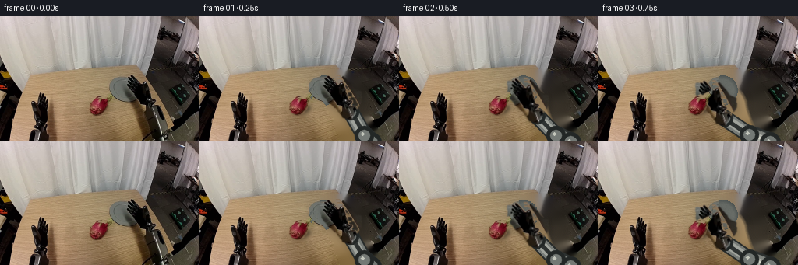
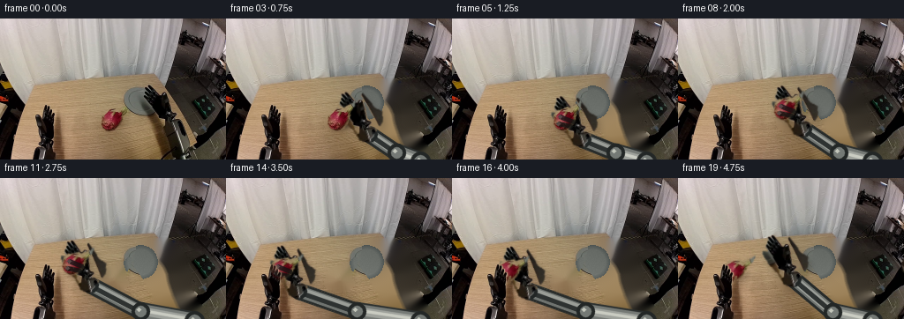
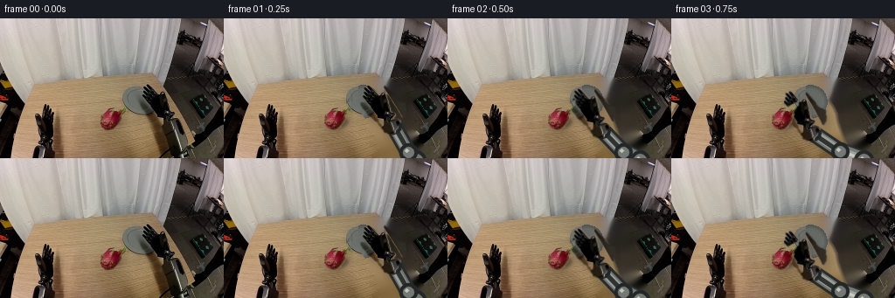
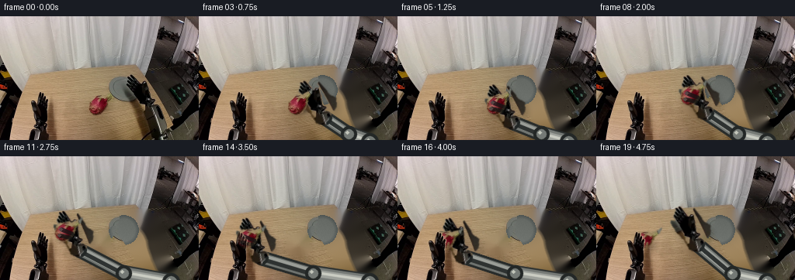
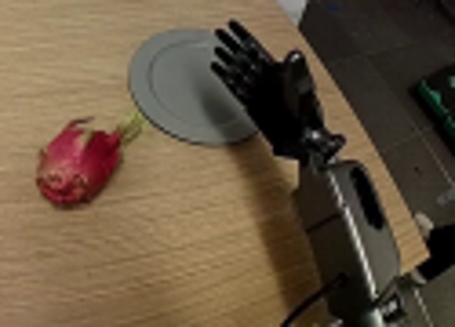
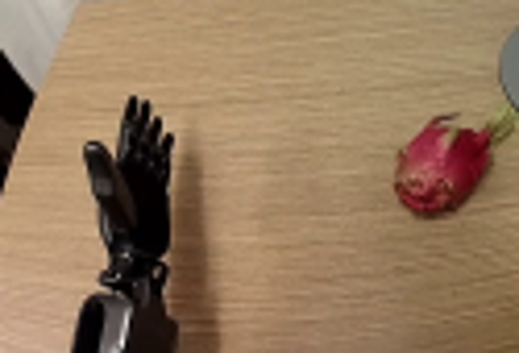
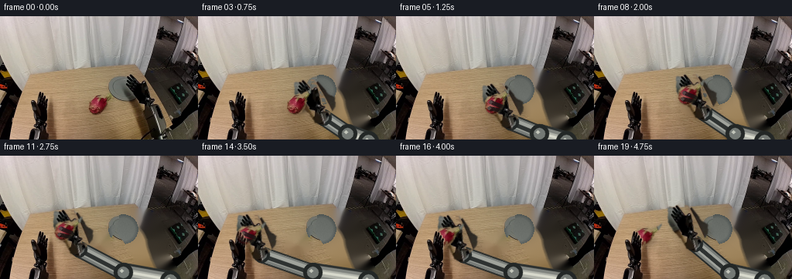
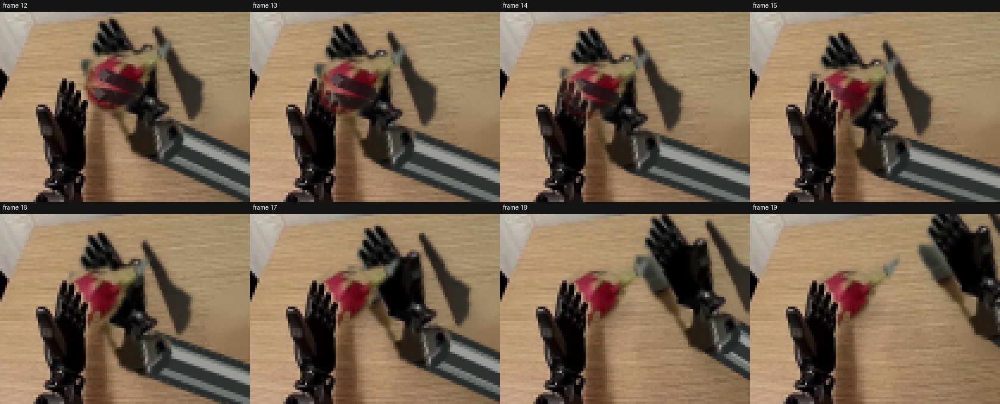

CODING AGENTS AS PIXEL WORLD MODELS
traex/GPT-5.6-Sol · common50_0038
点击播放 · 原生 RGB 像素
逐轮保存的候选
回放视频、检查图与代码变化。
每份候选均可单独播放。实际图片检查记录在下方工具轨迹中。
候选 01播放与检查图
点击播放 · 原生 RGB 像素


展开代码变化
--- 上一保存版本
+++ 本次保存版本
@@ -0,0 +1,263 @@
+from pathlib import Path
+
+import cv2
+import numpy as np
+
+import artifact_io
+
+
+ROOT = Path(__file__).resolve().parent
+SRC = np.asarray(__import__("PIL").Image.open(ROOT / "first_frame.png").convert("RGB"))
+H, W = SRC.shape[:2]
+
+
+def feather(mask, sigma=0.75):
+ mask = cv2.GaussianBlur(mask.astype(np.float32), (0, 0), sigma)
+ return np.clip(mask / 255.0, 0.0, 1.0)
+
+
+def make_cutouts():
+ # The masks are deliberately conservative: only pixels belonging to the
+ # objects are moved, so no rectangular pieces of the original table move.
+ yy, xx = np.mgrid[:H, :W]
+ gray = cv2.cvtColor(SRC, cv2.COLOR_RGB2GRAY)
+
+ hand_region = np.zeros((H, W), np.uint8)
+ cv2.fillPoly(hand_region, [np.array([
+ (158, 79), (166, 73), (183, 72), (195, 84), (202, 92),
+ (210, 95), (211, 106), (207, 114), (202, 119), (198, 130),
+ (188, 128), (180, 117), (169, 108), (160, 97)
+ ], np.int32)], 255)
+ dark = (gray < 115).astype(np.uint8) * 255
+ hm = cv2.bitwise_and(hand_region, dark)
+ hm = cv2.morphologyEx(hm, cv2.MORPH_CLOSE, np.ones((3, 3), np.uint8))
+ hm = cv2.dilate(hm, np.ones((2, 2), np.uint8), iterations=1)
+ hand_alpha = feather(hm, 0.65)
+
+ fruit_poly = np.zeros((H, W), np.uint8)
+ cv2.fillPoly(fruit_poly, [np.array([
+ (115, 109), (119, 104), (125, 103), (130, 100), (136, 102),
+ (140, 108), (138, 117), (133, 124), (126, 127), (119, 124),
+ (115, 119)
+ ], np.int32)], 255)
+ # Green, rigid stem/calyx attached to the fruit.
+ cv2.fillPoly(fruit_poly, [np.array([
+ (132, 105), (136, 99), (143, 96), (146, 92), (145, 99),
+ (140, 105), (138, 110)
+ ], np.int32)], 255)
+ fruit_alpha = feather(fruit_poly, 0.7)
+
+ left_region = np.zeros((H, W), np.uint8)
+ cv2.fillPoly(left_region, [np.array([
+ (40, 104), (42, 80), (47, 96), (48, 75), (52, 76), (54, 96),
+ (56, 80), (59, 81), (60, 101), (63, 91), (66, 95), (65, 115),
+ (62, 128), (52, 137), (43, 128)
+ ], np.int32)], 255)
+ lm = cv2.bitwise_and(left_region, (gray < 120).astype(np.uint8) * 255)
+ lm = cv2.dilate(lm, np.ones((2, 2), np.uint8), iterations=1)
+ left_alpha = feather(lm, 0.6)
+ return hand_alpha, fruit_alpha, left_alpha
+
+
+HAND_A, FRUIT_A, LEFT_A = make_cutouts()
+
+
+def clean_background():
+ remove = np.zeros((H, W), np.uint8)
+ # Original right hand, forearm, cable, and their immediate cast shadow.
+ cv2.fillPoly(remove, [np.array([
+ (157, 72), (188, 69), (206, 87), (214, 108), (210, 120),
+ (229, 151), (229, 159), (187, 159), (184, 139), (171, 126),
+ (164, 112), (154, 99)
+ ], np.int32)], 255)
+ cv2.fillPoly(remove, [np.array([
+ (181, 107), (200, 105), (216, 128), (222, 160), (183, 160),
+ (174, 135)
+ ], np.int32)], 255)
+ remove = cv2.dilate(remove, np.ones((5, 5), np.uint8), iterations=1)
+
+ # Fruit and its small shadow are removed separately.
+ fremove = (FRUIT_A > 0.03).astype(np.uint8) * 255
+ cv2.ellipse(fremove, (128, 119), (16, 8), 0, 0, 360, 255, -1)
+ remove = cv2.bitwise_or(remove, cv2.dilate(fremove, np.ones((3, 3), np.uint8)))
+
+ bgr = cv2.cvtColor(SRC, cv2.COLOR_RGB2BGR)
+ bg = cv2.inpaint(bgr, remove, 5, cv2.INPAINT_TELEA)
+ bg = cv2.cvtColor(bg, cv2.COLOR_BGR2RGB)
+
+ # Restore the portion of the grey dish hidden by the original hand. Only
+ # changed pixels are painted, preserving every visible source-frame pixel.
+ cy, cx, radius = 95.0, 159.0, 19.3
+ yy, xx = np.mgrid[:H, :W]
+ rr = np.sqrt((xx - cx) ** 2 + (yy - cy) ** 2)
+ dish = (rr <= radius) & (remove > 0)
+ rng = np.random.default_rng(38)
+ rim = np.clip((rr - 14.3) / 5.0, 0, 1)
+ light = np.clip((yy - cy) * 0.35 + (cx - xx) * 0.10, -5, 5)
+ base = np.zeros_like(bg, dtype=np.float32)
+ core = np.array([107, 111, 106], np.float32)
+ edge = np.array([83, 89, 87], np.float32)
+ base[:] = core[None, None, :] * (1 - rim[..., None]) + edge[None, None, :] * rim[..., None]
+ base += light[..., None] + rng.normal(0, 1.0, (H, W, 1))
+ bg[dish] = np.clip(base[dish], 0, 255).astype(np.uint8)
+ return bg, remove
+
+
+BACKGROUND, REMOVE_MASK = clean_background()
+
+
+def warp_sprite(image, alpha, pivot, target, angle):
+ m = cv2.getRotationMatrix2D(tuple(map(float, pivot)), float(angle), 1.0)
+ m[0, 2] += target[0] - pivot[0]
+ m[1, 2] += target[1] - pivot[1]
+ rgb = cv2.warpAffine(image, m, (W, H), flags=cv2.INTER_LINEAR,
+ borderMode=cv2.BORDER_CONSTANT, borderValue=(0, 0, 0))
+ aa = cv2.warpAffine(alpha.astype(np.float32), m, (W, H), flags=cv2.INTER_LINEAR,
+ borderMode=cv2.BORDER_CONSTANT, borderValue=0)
+ return rgb, np.clip(aa, 0, 1)
+
+
+def over(dst, src, alpha):
+ a = np.clip(alpha, 0, 1)[..., None]
+ return np.clip(dst.astype(np.float32) * (1 - a) + src.astype(np.float32) * a,
+ 0, 255).astype(np.uint8)
+
+
+def capsule(img, a, b, width, color):
+ a = tuple(np.rint(a).astype(int)); b = tuple(np.rint(b).astype(int))
+ cv2.line(img, a, b, color, width, cv2.LINE_AA)
+ cv2.circle(img, a, width // 2, color, -1, cv2.LINE_AA)
+ cv2.circle(img, b, width // 2, color, -1, cv2.LINE_AA)
+
+
+def add_arm(frame, wrist, grip_x, hand_alpha):
+ # A stable two-link robot with a fixed base at the lower-right. The links
+ # are shaded as nested telescoping metal housings; all joint motion is rigid.
+ base = np.array([220.0, 162.0])
+ extension = np.clip((178.0 - grip_x) / 115.0, 0, 1)
+ elbow = np.array([213.0 - 67.0 * extension, 153.0 - 2.0 * extension])
+
+ shadow = np.zeros_like(frame)
+ sh_a = np.zeros((H, W), np.uint8)
+ capsule(sh_a, base + (4, 5), elbow + (4, 5), 24, 72)
+ capsule(sh_a, elbow + (4, 5), wrist + (4, 5), 21, 68)
+ shifted_hand = cv2.warpAffine(hand_alpha, np.float32([[1, 0, 4], [0, 1, 6]]), (W, H))
+ sh_a = np.maximum(sh_a.astype(np.float32) / 255.0, shifted_hand * 0.48)
+ sh_a = cv2.GaussianBlur(sh_a, (0, 0), 4.0)
+ frame = over(frame, shadow, sh_a * 0.34)
+
+ # Rear/upper link.
+ capsule(frame, base, elbow, 23, (44, 48, 47))
+ capsule(frame, base, elbow, 18, (129, 132, 127))
+ capsule(frame, base + (-1, -1), elbow + (-1, -1), 8, (176, 178, 169))
+ capsule(frame, base + (-3, -2), elbow + (-3, -2), 2, (216, 217, 204))
+ # Forward link with its black inset panel.
+ capsule(frame, elbow, wrist, 20, (39, 43, 42))
+ capsule(frame, elbow, wrist, 15, (119, 123, 119))
+ capsule(frame, elbow + (-1, -1), wrist + (-1, -1), 9, (160, 163, 156))
+ capsule(frame, elbow + (2, 2), wrist + (2, 2), 4, (46, 50, 49))
+
+ for p, ro, ri in ((base, 13, 8), (elbow, 12, 7), (wrist, 10, 6)):
+ cv2.circle(frame, tuple(np.rint(p).astype(int)), ro, (35, 39, 38), -1, cv2.LINE_AA)
+ cv2.circle(frame, tuple(np.rint(p).astype(int)), ri, (116, 121, 117), -1, cv2.LINE_AA)
+ cv2.circle(frame, tuple(np.rint(p + (-2, -2)).astype(int)), max(2, ri // 3),
+ (194, 197, 186), -1, cv2.LINE_AA)
+ return frame
+
+
+GRIPS = [
+ (178, 101), (174, 102), (158, 106), (143, 109), (131, 112),
+ (130, 114), (130, 111), (130, 106), (124, 102), (112, 99),
+ (99, 97), (86, 97), (76, 99), (69, 101), (67, 103),
+ (67, 105), (71, 104), (83, 101), (99, 96), (113, 91)
+]
+
+FRUITS = [
+ (127, 114), (127, 114), (127, 114), (127, 114), (127, 114),
+ (127, 114), (127, 111), (127, 106), (121, 102), (109, 99),
+ (96, 97), (83, 97), (73, 99), (66, 101), (63, 103),
+ (63, 105), (63, 105), (63, 105), (63, 105), (63, 105)
+]
+
+
+def fruit_shadow(frame, center, airborne):
+ layer = np.zeros_like(frame)
+ alpha = np.zeros((H, W), np.uint8)
+ dx = 3 + int(airborne * 2)
+ dy = 5 + int(airborne * 2)
+ axes = (12 + int(airborne * 2), max(3, 6 - int(airborne * 2)))
+ cv2.ellipse(alpha, (int(center[0] + dx), int(center[1] + dy)), axes,
+ -8, 0, 360, 105 if airborne < .4 else 65, -1, cv2.LINE_AA)
+ alpha = cv2.GaussianBlur(alpha, (0, 0), 2.2 + airborne * 1.8) / 255.0
+ return over(frame, layer, alpha)
+
+
+def add_grasp_fingers(frame, fruit_c, strength, angle):
+ if strength <= 0:
+ return frame
+ overlay = frame.copy()
+ c = np.array(fruit_c, float)
+ # Short opposing fingertips crossing the near rim of the fruit make the
+ # contact/ownership unambiguous without changing the rigid hand sprite.
+ paths = [
+ (c + (8, 8), c + (-7, 5)),
+ (c + (10, 3), c + (-5, -3)),
+ ]
+ for a, b in paths:
+ cv2.line(overlay, tuple(a.astype(int)), tuple(b.astype(int)),
+ (18, 20, 19), 3, cv2.LINE_AA)
+ cv2.circle(overlay, tuple(b.astype(int)), 2, (71, 74, 70), -1, cv2.LINE_AA)
+ return over(frame, overlay, np.full((H, W), strength * .78, np.float32))
+
+
+def generate():
+ frames = []
+ for i in range(20):
+ if i == 0:
+ frames.append(SRC.copy())
+ continue
+
+ grip = np.array(GRIPS[i], float)
+ fc = np.array(FRUITS[i], float)
+ angle = -12.0 * np.clip((178 - grip[0]) / 115.0, 0, 1)
+ fruit_angle = -14.0 * np.clip((i - 5) / 8.0, 0, 1)
+
+ frame = BACKGROUND.copy()
+ hand_rgb, hand_a = warp_sprite(SRC, HAND_A, (178, 101), grip, angle)
+ # The transformed wrist remains mechanically connected to the hand.
+ rad = np.deg2rad(-angle)
+ v = np.array([20.0, 21.0])
+ rot = np.array([[np.cos(rad), -np.sin(rad)], [np.sin(rad), np.cos(rad)]])
+ wrist = grip + rot @ v
+ frame = add_arm(frame, wrist, grip[0], hand_a)
+
+ airborne = 0.0 if i <= 5 else min(1.0, (i - 5) / 4.0)
+ frame = fruit_shadow(frame, fc, airborne)
+ frame = over(frame, hand_rgb, hand_a)
+
+ fruit_rgb, fruit_a = warp_sprite(SRC, FRUIT_A, (127, 114), fc, fruit_angle)
+ frame = over(frame, fruit_rgb, fruit_a)
+
+ grasp = 0.0
+ if 4 <= i <= 15:
+ grasp = min(1.0, (i - 3) / 2.0)
+ if i >= 14:
+ grasp *= max(0.0, (16 - i) / 2.0)
+ frame = add_grasp_fingers(frame, fc, grasp, angle)
+
+ # During handoff, original left fingers are re-composited in front of
+ # the fruit, so the final state visibly rests in the receiving hand.
+ if i >= 13:
+ hold = np.clip((i - 12) / 3.0, 0, 1)
+ frame = over(frame, SRC, LEFT_A * hold)
+
+ frames.append(frame)
+
+ return np.stack(frames).astype(np.uint8)
+
+
+if __name__ == "__main__":
+ out = generate()
+ assert out.shape == (20, 160, 256, 3) and out.dtype == np.uint8
+ assert np.array_equal(out[0], SRC)
+ artifact_io.save(out, ROOT)
候选 02播放与检查图
点击播放 · 原生 RGB 像素


展开代码变化
--- 上一保存版本
+++ 本次保存版本
@@ -28,7 +28,9 @@
(210, 95), (211, 106), (207, 114), (202, 119), (198, 130),
(188, 128), (180, 117), (169, 108), (160, 97)
], np.int32)], 255)
- dark = (gray < 115).astype(np.uint8) * 255
+ # Keep only the black glove. A higher threshold would incorrectly attach
+ # part of the nearby grey dish to the moving sprite.
+ dark = (gray < 72).astype(np.uint8) * 255
hm = cv2.bitwise_and(hand_region, dark)
hm = cv2.morphologyEx(hm, cv2.MORPH_CLOSE, np.ones((3, 3), np.uint8))
hm = cv2.dilate(hm, np.ones((2, 2), np.uint8), iterations=1)
@@ -147,17 +149,17 @@
frame = over(frame, shadow, sh_a * 0.34)
# Rear/upper link.
- capsule(frame, base, elbow, 23, (44, 48, 47))
- capsule(frame, base, elbow, 18, (129, 132, 127))
- capsule(frame, base + (-1, -1), elbow + (-1, -1), 8, (176, 178, 169))
- capsule(frame, base + (-3, -2), elbow + (-3, -2), 2, (216, 217, 204))
+ capsule(frame, base, elbow, 20, (44, 48, 47))
+ capsule(frame, base, elbow, 15, (117, 121, 117))
+ capsule(frame, base + (-1, -1), elbow + (-1, -1), 7, (158, 161, 155))
+ capsule(frame, base + (-3, -2), elbow + (-3, -2), 2, (202, 204, 194))
# Forward link with its black inset panel.
- capsule(frame, elbow, wrist, 20, (39, 43, 42))
- capsule(frame, elbow, wrist, 15, (119, 123, 119))
- capsule(frame, elbow + (-1, -1), wrist + (-1, -1), 9, (160, 163, 156))
- capsule(frame, elbow + (2, 2), wrist + (2, 2), 4, (46, 50, 49))
-
- for p, ro, ri in ((base, 13, 8), (elbow, 12, 7), (wrist, 10, 6)):
+ capsule(frame, elbow, wrist, 17, (39, 43, 42))
+ capsule(frame, elbow, wrist, 12, (111, 115, 111))
+ capsule(frame, elbow + (-1, -1), wrist + (-1, -1), 7, (154, 157, 151))
+ capsule(frame, elbow + (2, 2), wrist + (2, 2), 3, (46, 50, 49))
+
+ for p, ro, ri in ((base, 11, 7), (elbow, 10, 6), (wrist, 9, 5)):
cv2.circle(frame, tuple(np.rint(p).astype(int)), ro, (35, 39, 38), -1, cv2.LINE_AA)
cv2.circle(frame, tuple(np.rint(p).astype(int)), ri, (116, 121, 117), -1, cv2.LINE_AA)
cv2.circle(frame, tuple(np.rint(p + (-2, -2)).astype(int)), max(2, ri // 3),
候选 03播放与检查图
点击播放 · 原生 RGB 像素

展开代码变化
--- 上一保存版本
+++ 本次保存版本
@@ -170,15 +170,15 @@
GRIPS = [
(178, 101), (174, 102), (158, 106), (143, 109), (131, 112),
(130, 114), (130, 111), (130, 106), (124, 102), (112, 99),
- (99, 97), (86, 97), (76, 99), (69, 101), (67, 103),
- (67, 105), (71, 104), (83, 101), (99, 96), (113, 91)
+ (99, 97), (86, 97), (76, 99), (69, 102), (65, 106),
+ (64, 109), (71, 106), (83, 102), (99, 96), (113, 91)
]
FRUITS = [
(127, 114), (127, 114), (127, 114), (127, 114), (127, 114),
(127, 114), (127, 111), (127, 106), (121, 102), (109, 99),
- (96, 97), (83, 97), (73, 99), (66, 101), (63, 103),
- (63, 105), (63, 105), (63, 105), (63, 105), (63, 105)
+ (96, 97), (83, 97), (73, 99), (66, 102), (62, 106),
+ (60, 109), (60, 109), (60, 109), (60, 109), (60, 109)
]
可观测工具轨迹
实际执行的命令与返回图片。
命令 1exit 0
/bin/bash -lc "cat prompt.txt && printf '\\n--- GENERATION RULES ---\\n' && cat GENERATION_RULES.md"
命令 2exit 0
/bin/bash -lc "find . -maxdepth 2 -type f -printf '%p\\n' | sort && printf '\\n--- ffmpeg ---\\n' && ffmpeg -version | head -n 3 && printf '\\n--- python packages ---\\n' && python - <<'PY' mods=['cv2','PIL','numpy','imageio','torch'] for m in mods: try: x=__import__(m); print(m, getattr(x,'__version__','ok')) except Exception as e: print(m,'ERR',e) PY"
命令 3exit 0
/bin/bash -lc "cat task_spec.json && printf '\\n--- artifact_io.py ---\\n' && sed -n '1,260p' artifact_io.py"
命令 4exit 0
/bin/bash -lc "python - <<'PY'
from PIL import Image
im=Image.open('first_frame.png')
im.crop((105,70,230,160)).resize((750,540)).save('.tmp/right_crop.png')
im.crop((20,75,145,160)).resize((750,510)).save('.tmp/left_crop.png')
PY"命令 5exit 0
/bin/bash -lc "python generate.py && python - <<'PY'
import numpy as np
from PIL import Image
src=np.asarray(Image.open('first_frame.png').convert('RGB'))
z=np.load('pixels.npz')['pixels']
f=((z.transpose(2,0,1)[...,None] >> np.array([16,8,0])) & 255).astype(np.uint8)
print('frames',f.shape,f.dtype,'first_equal',np.array_equal(f[0],src))
print('frame deltas', [int(np.count_nonzero(np.any(f[i]"'!=f[i-1],axis=2))) for i in range(1,20)])
print('"'source deltas',[int(np.count_nonzero(np.any(f[i]"'!=src,axis=2))) for i in range(20)])
PY'命令 6exit 0
/bin/bash -lc 'python generate.py'
命令 7exit 0
/bin/bash -lc "python - <<'PY'
from PIL import Image,ImageDraw
ims=[Image.open(f'frames/{i:02}.png').crop((25,70,130,150)).resize((420,320),Image.Resampling.NEAREST) for i in range(12,20)]
s=Image.new('RGB',(420*4,340*2),(20,20,20)); d=ImageDraw.Draw(s)
for j,(im,i) in enumerate(zip(ims,range(12,20))):
x=(j%4)*420;y=(j//4)*340;d.text((x+5,y+3),f'frame {i}',fill='white');s.paste(im,(x,y+20))
s.save('.tmp/handoff.png')
PY"命令 8exit 0
/bin/bash -lc "python generate.py && python - <<'PY'
from pathlib import Path
import numpy as np
from PIL import Image
src=np.asarray(Image.open('first_frame.png').convert('RGB'))
fs=[]
for i in range(20):
p=Path('frames')/f'{i:02}.png'
assert p.exists(),p
a=np.asarray(Image.open(p).convert('RGB'))
assert a.shape==(160,256,3) and a.dtype==np.uint8
fs.append(a)
f=np.stack(fs)
assert np.array_equal(f[0],src)
z=np.load('pixels.npz')['pixels']
assert z.shape==(160,256,20) and z.dtype==np.uint32
recon=np.stack([((z>>16)&255),((z>>8)&255),(z&255)],axis=-1).transpose(2,0,1,3).astype(np.uint8)
assert np.array_equal(recon,f)
print('PASS: 20 RGB frames, 256x160, uint8, exact frame 00, pixels.npz round-trip exact')
print('outputs:', ', '.join(str(p) for p in ['pixels.npz','frames/','inspection.png','transition_check.png','index.html','generate.py']))
PY
ls -lh pixels.npz index.html inspection.png transition_check.png generate.py"视觉工具实际返回图片 1

视觉工具实际返回图片 2

视觉工具实际返回图片 3

视觉工具实际返回图片 4

视觉工具实际返回图片 5

视觉工具实际返回图片 6

视觉工具实际返回图片 7

保存候选 3 份；完成命令 8 次；可验证图片返回 7 张。原始 API 响应与完整日志保留在本地。